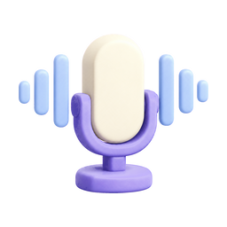

Elle’s Journey
Good morning
Tuesday, October 8
🌿
Week 4 of 12Day 24
Tuesday • school today • Weekly Talk Check after school
Rx
Today’s dosesLeucovorin • prescribed 10 mg twice daily
✓ First10 mg • 8:05 AM
○ Second10 mg • due tonight
✓
Daily check-inRatings, sleep, bowel + notes • 1–2 min
›
💬
Weekly Talk CheckSame five questions • the app guides every step
›
Today is the preferred day • after school
◎
Starting example savedHand-holding reenactment • “Help mommy” • score 3/5
›
✎
Add today’s school updateType it or use voice-to-text at pickup

Voice entry ready›
Next report
6
Week 6 doctor reportIncludes detailed communication and bowel summary
›